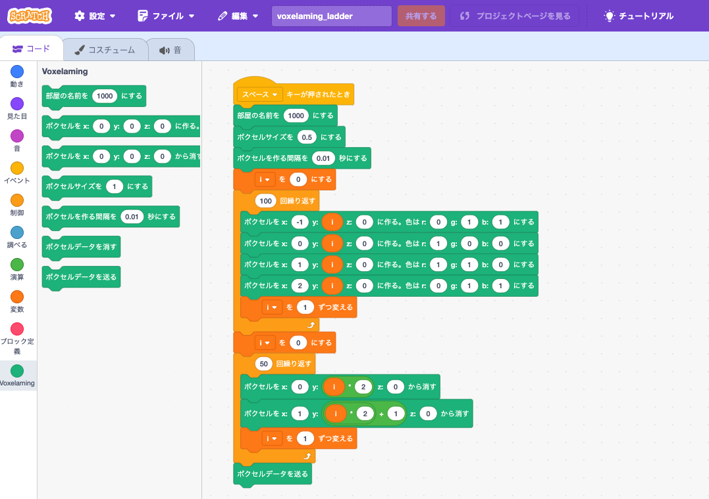

ボクセラミング - ARKitを使ったプログラミング学習アプリ

Read this in other languages: English, 日本語
ボクセラミングとは
ボクセラミング = ボクセル + プログラミング
ボクセラミングは、ARKitを使ったプログラミング学習アプリです。ARKitに対応したiPhone、iPad（iOS13以上）で無料で使用できます。パソコンでプログラムしたボクセル（ピクセルと同様に3D空間における最小単位の立方体）を仮想空間上に配置して遊ぶことができます。
使い方
パソコンの準備
パソコンは、Windows、Macの両対応です。お使いのパソコンに、プログラミング言語（Python、Node.js、Ruby、Swift）がインストールされていないときは、使いたい言語をインストールしてください。パソコンとデバイス（iPhone、iPad）のデータ通信はインターネット回線を使います（同じ回線に繋がなくてもよい）。以上で、パソコンの準備ができました。
平面アンカーの設置
ボクセラミングアプリを起動します。初回の起動時のみ、カメラの使用許可を求められるので「はい」で許可してください。ガメラが起動すると、ARKitが自動で現実世界の平面を探します。平面検知の印（赤緑青の座標軸）が出たら、画面をタップして平面アンカーを設置します。平面アンカーは白と黒のタイルで構成されています。以上でボクセルを設置する準備が整いました。
ボクセルの設計（プログラミング）
パソコン（Windows、Mac）でボクセルを設置するための「ボクセルデータ」をプログラミングします。ボクセルデータには、「位置、色、サイズ、設置する間隔など」の情報が含まれます。対応の言語は、Scratch3 MOD、Python、JavaScript (Node.js)、Ruby、Swiftです。
スクリプトを作成しましょう。初めに、WebSocketサーバーのルームに接続するためにルームネームを設定します。ルームネームは、デバイス（iPhone、iPad）の画面中央に表示されている文字列です。変数room_name（roomName）にルームネームを代入します。
次に、各言語の繰り返し文や条件式などを使って、ボクセルデータを作成します。ボクセルの位置は、平面アンカーを基準にして、x軸、y軸、z軸の値を指定します。x軸は左右、y軸は上下、z軸は奥行き（手前がプラス）を表します（単位はセンチメートル）。ボクセルの大きさは、1.0cmを基準にして小数で指定します。色はRGB値で0から1までの小数で指定します。そして、ボクセルを設置する間隔を秒で指定します。ボクセルを設置する間隔を指定することで、ボクセルが一気に設置されるのではなく、時間をかけて設置されるようになります。
ボクセルの配置
スクリプトを実行すると、WebSocket通信でボクセルデータがデバイス（iPhone、iPad）に送信されます。データが受信できたら、デバイス画面の平面アンカーを基準にして、ARボクセルが設置されます。
＊ WebSocketサーバーが休止しているとき、データ送信が失敗する場合があります。そのときは、しばらく待ってから再度実行してください。
メソッドの説明
スクリプトで使用するメソッドを説明します。各言語のメソッド名は、以下の通りです。
- set_box_size(size)：ボクセルの大きさを設定します。単位はセンチメートルです。デフォルトは1.0です。
- set_build_interval(interval)：ボクセルを設置する間隔（インターバル）を設定します。単位は秒です。デフォルトは0.01です。
- create_box(x, y, z, r, g, b)：ボクセルを設置します。x軸、y軸、z軸の位置と、色を指定します。色はRGB値で0から1までの小数で指定します。
- remove_box(x, y, z)：ボクセルを削除します。x軸、y軸、z軸の位置を指定します。（指定位置にボクセルがないときは、何もしません）
- send_data()：ボクセルデータをデバイス（iPhone、iPad）に送信します。
- clear_boxes()：設置されているボクセルをすべて削除します。サイズ、インターバルも初期化します。
＊ スネークケースとキャメルケースは読み替えてください。（set_box_size -> setBoxSize）
スクリプトの例
sampleフォルダーに、スクリプトの例を用意しました。以下のスクリプトを実行すると、画像のようなボクセルが設置されます。
Scratch3 MOD
ボクセラミング拡張機能を読み込んで、スクリプトを作成してください。

Python (3.6以上)
スクリプト
# Python
from build_box import BuildBox
room_name = "1000"
build_box = BuildBox(room_name)
build_box.clear_boxes()
build_box.set_box_size(0.5)
build_box.set_build_interval(0.01)
for i in range(100):
build_box.create_box(-1, i, 0, 0, 1, 1)
build_box.create_box(0, i, 0, 1, 0, 0)
build_box.create_box(1, i, 0, 1, 1, 0)
build_box.create_box(2, i, 0, 0, 1, 1)
for i in range(50):
build_box.remove_box(0, i * 2 + 1, 0)
build_box.remove_box(1, i * 2, 0)
# for i in range(-10, 11):
# for j in range(0, 11):
# for k in range(-10, 11):
# if i ** 2 + j ** 2 + k ** 2 < 10 ** 2:
# print(i, j, k)
# build_box.create_box(i, j, k, 0, 1, 1)
build_box.send_data()
実行方法
$ python main.py
or
$ python3 main.py
JavaScript (Node.js)
スクリプト
// JavaScript (Node.js)
import BuildBox from './buildBox.mjs';
const roomName = '1000';
const buildBox = new BuildBox(roomName);
buildBox.clearData();
buildBox.setBoxSize(0.5);
buildBox.setBuildInterval(0.01);
for (let i = 0; i < 100; i++) {
buildBox.createBox(-1, i, 0, 0, 1, 1);
buildBox.createBox(0, i, 0, 1, 0, 0);
buildBox.createBox(1, i, 0, 1, 1, 0);
buildBox.createBox(2, i, 0, 0, 1, 1);
}
for (let i = 0; i < 50; i++) {
buildBox.removeBox(0, i * 2, 0);
buildBox.removeBox(1, i * 2 + 1, 0);
}
buildBox.sendData();
実行方法
$ node main.mjs
Ruby
スクリプト
# Ruby
require_relative 'build_box'
room_name = '1000'
build_box = BuildBox.new(room_name)
build_box.clear_boxes()
build_box.set_box_size(0.5)
build_box.set_build_interval(0.01)
for i in 0...100
build_box.create_box(-1, i, 0, 0, 1, 1)
build_box.create_box(0, i, 0, 1, 0, 0)
build_box.create_box(1, i, 0, 1, 1, 0)
build_box.create_box(2, i, 0, 0, 1, 1)
end
for i in 0...50
build_box.remove_box(0, i * 2, 0)
build_box.remove_box(1, i * 2 + 1, 0)
end
build_box.send_data
実行方法
$ ruby main.rb
Swift
スクリプト
// Swift (リファクタリング中)
import Foundation
let roomName = "1000"
@available(iOS 15.0, macOS 12.0, *)
func main() async {
do {
let buildBox = BuildBox(roomName)
buildBox.setSize(0.5)
buildBox.setBuildInterval(0.01)
for i in 0..<100 {
buildBox.createBox(-1, Double(i), 0, 0, 1, 1)
buildBox.createBox(0, Double(i), 0, 1, 0, 0)
buildBox.createBox(1, Double(i), 0, 1, 1, 0)
buildBox.createBox(2, Double(i), 0, 0, 1, 1)
}
for i in 0..<50 {
buildBox.removeBox(0, Double(i * 2), 0)
buildBox.removeBox(1, Double(i * 2 + 1), 0)
}
try await buildBox.sendData()
} catch {
print("An error occurred: \(error)")
}
}
if #available(iOS 15.0, macOS 12.0, *) {
Task.detached(priority: .userInitiated) {
await main()
}
RunLoop.main.run(until: Date(timeIntervalSinceNow: 10)) // Or longer depending on your needs
} else {
fatalError("This script requires iOS 15.0 / macOS 12.0 or later.")
}
実行方法
$ cd swift/Sources
$ swift run
ボクセルの削除
準備中
ボクセルのアニメーション
準備中
ユーザー共有
準備中
設定
画面右上の「Settings」ボタンから設定画面に移動できます。デバッグモードをオフにすると、画面の情報表示が無効になrます。
ライセンス
作者
creativival